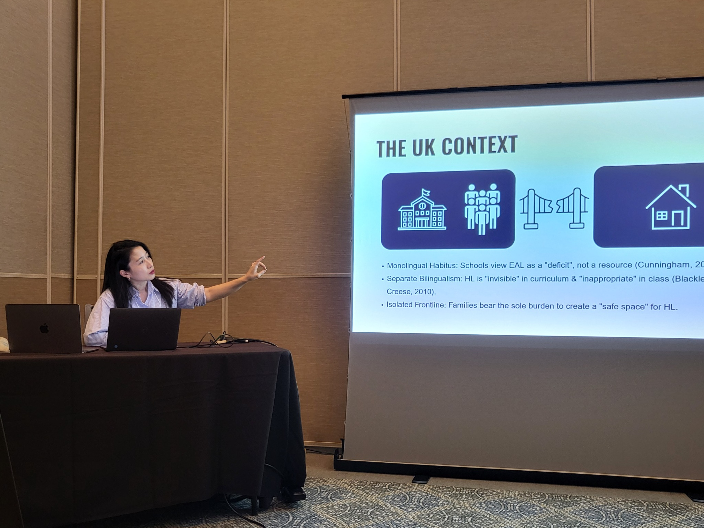
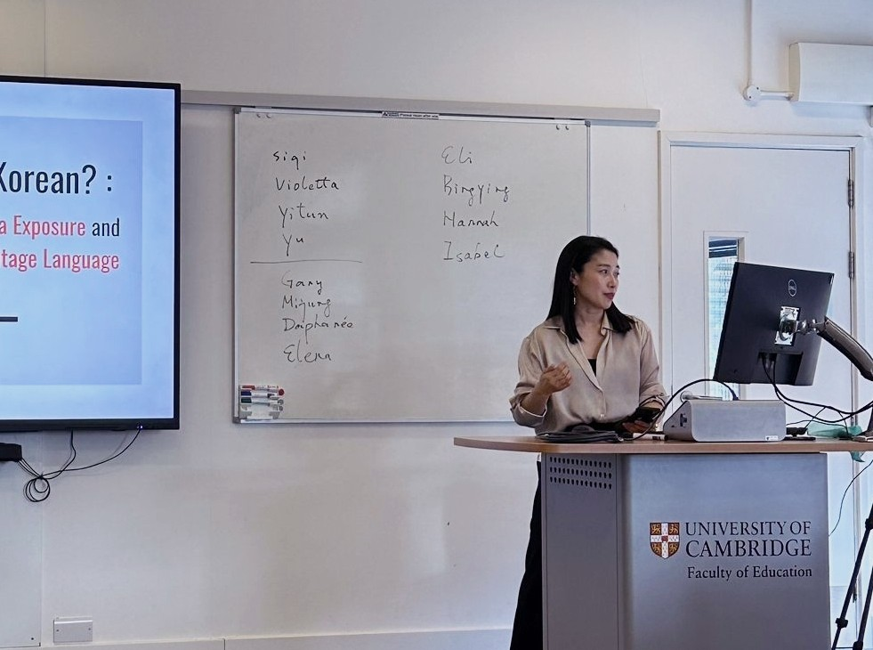
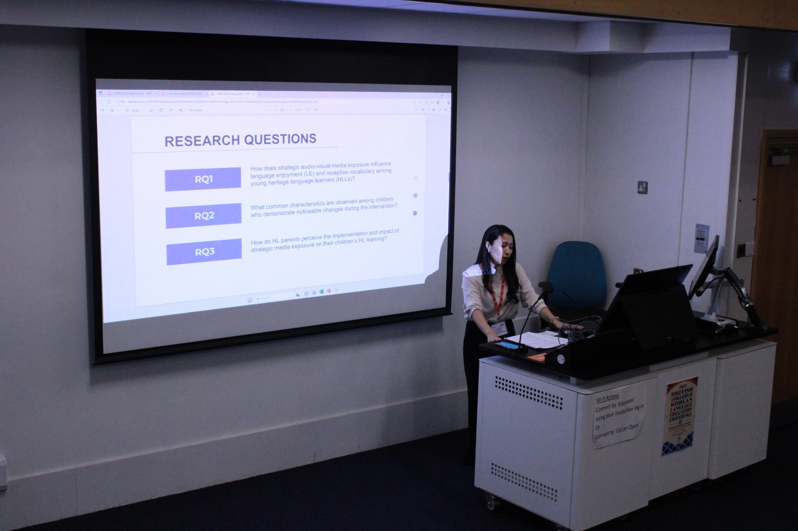

읽는 힘
Fluency · AccuracyVocabulary

VIVIAN ENGLISH · READING & LITERACY LAB
영어를 오래 배웠어도 혼자 책을 읽고, 이해하고, 생각을 표현하는 힘은 저절로 생기지 않습니다.
Vivian English는 아이의 현재 읽기 수준에서 시작해 읽기 → 이해 → 사고 → 표현으로 이어지는 영어 문해력을 체계적으로 키웁니다.
17년 언어교육 · 7년 온라인수업 설계 · Cambridge 언어교육 연구
Evidence-informed practice,
grounded in real classrooms and homes.
WHERE READING STOPS
우리 아이는 어디에서 막혀 있을까요?
겉으로 비슷해 보이는 읽기 어려움도 필요한 접근은 서로 다릅니다.
글자는 읽지만 내용을 잘 기억하지 못한다
줄거리는 알지만 왜 그런지는 설명하기 어렵다
질문에 한두 단어로만 대답한다
답은 맞히지만 본문에서 근거를 찾기 어렵다
영어책을 오래 읽었는데 읽기 수준이 잘 올라가지 않는다
책은 읽지만 말하기와 쓰기로 잘 연결되지 않는다
읽기 문제는 아이마다 막혀 있는 지점이 다릅니다.
READING DEVELOPMENT
읽는 정확성과 유창성에서 시작해, 이해하고 근거를 찾고 자신의 말과 글로 표현하는 단계까지 연결합니다.
Vocabulary
Main Idea · Context
Character · Theme
Analytical Writing
READ → UNDERSTAND → THINK → EXPRESS
THREE WAYS TO BEGIN
소리와 글자를 연결하고 이야기 읽기의 기초를 만듭니다.
Reading Foundations 보기 →현재 Reading Stage와 다음 성장 방향을 확인합니다.
Reading Profile 알아보기 →읽기에서 이해, 사고, 표현으로 이어지는 문해력을 키웁니다.
Curriculum 보기 →MY APPROACH
“아이에게 더 많이 시키는 것보다,
지금 무엇이 필요한지 정확히 보는 것이 먼저입니다.”
ABOUT VIVIAN
아이들이 영어를 ‘배우는 것’에서 멈추지 않고, 스스로 읽고 이해하고 생각할 수 있는 단계까지 가도록 돕는 것이 제가 가장 오래 해온 일입니다.
저는 17년간 언어를 가르쳐온 교육자이자, 7년간 온라인 수업을 설계하고 운영해온 교사입니다.
가정에서의 전략적인 언어 노출을 통해 두 아이를 유창한 이중언어 화자로 키워온 엄마이자, 현재 Cambridge에서 언어교육을 연구하고 있는 연구자이기도 합니다.
아이들을 가르치고 키우며 생긴 질문들은 자연스럽게 연구로 이어졌습니다. 수업에서 발견한 문제를 연구의 언어로 들여다보고, 연구에서 얻은 인사이트를 다시 가정과 수업으로 돌려보내는 일을 중요하게 생각합니다.
Years in language education
Years teaching online
Peer-reviewed publication
연구 활동과 학술 프로필은 Mijung Park Research Profile ↗에서, 한국어 계승어·문해력 연구와 실천 프로젝트는 Ko-read ↗에서 더 자세히 볼 수 있습니다.
HOW I TEACH
오프라인 수업을 단순히 화면으로 옮기지 않습니다. 아이가 읽고, 생각하고, 말하고, 쓰는 경험이 온라인에서도 이어지도록 설계합니다.
01
Reading 수업에서 제가 가장 많이 하는 질문은 “What happened?”보다 “How do you know?”입니다.
02
원서 읽기는 ‘좋은 책’을 읽히는 것보다 아이가 이야기 속으로 들어가는 경험에서 시작합니다.
03
속도감, 교사의 에너지, 분명한 기준. 온라인 환경에 맞는 수업의 리듬을 설계합니다.
04
남들이 좋다고 하는 콘텐츠보다 ‘이 아이가 진짜 좋아할 것’을 찾는 일이 학습 지속성에 중요합니다.
READING DEVELOPMENT
아이가 현재 어디까지 읽을 수 있고 어디에서 막히는지를 살펴, 읽기 → 이해 → 사고 → 표현의 다음 단계로 이동하도록 돕습니다.
FOUNDATIONS
Pre-Reading Home Coaching · Phonics & Early Reading
Stage 0–1 pathway 보기 →READING & LITERACY
Reading Coaching · Small Group Reading & Literacy · 1:1 Reading & Literacy
Stage 2–6 pathway 보기 →ADVANCED
Literary Reading · Close Analysis · Discussion · Analytical Writing
Advanced pathway 보기 →READING FOUNDATIONS · A–E
영어책을 스스로 읽을 수 있는 힘부터, 읽은 내용을 이해하고 설명하는 힘까지. 파닉스는 독립적인 목표가 아니라 Reading Development의 시작 단계입니다.
Phonics → Fluency → Vocabulary → Comprehension → Response의 흐름으로, 아이의 일정에 맞춰 매일 조금씩 학습하는 온라인 자기주도형 스터디 프로그램입니다.
지난 수년간 온라인 수업에서 실제 학생들을 지도하며 발전시켜온 과제 시스템과 Vivian이 직접 제작한 자료를 바탕으로 진행됩니다. 파닉스를 알파벳 소리를 익히는 과정으로 끝내지 않고, 실제로 읽을 수 있는 힘과 매일 학습하는 습관까지 연결합니다.
5-LEVEL CURRICULUM
알파벳 소리 인식에서 시작해 blending, 장모음, 자음 패턴, 확장된 모음 패턴까지 총 5단계로 이어집니다.
알파벳 대·소문자는 알지만 각 글자의 소리가 아직 익숙하지 않은 학습자. 기본 소리를 빠르게 인식하고 간단한 단어와 문장을 읽는 기초를 만듭니다.
알파벳 소리는 알지만 단어로 연결해 읽는 것이 어려운 학습자. 자음과 단모음을 blending하여 단어와 문장을 만들고 짧은 책 읽기로 연결합니다.
단모음은 읽지만 모음이 복잡해지면 자신감이 떨어지는 학습자. 다양한 long vowel 패턴을 인식하고 실제 읽기에 적용합니다.
비슷한 자음 소리를 혼동하거나 단어 위치에 따른 자음 소리 구별이 어려운 학습자. 소리와 철자를 정확히 연결해 복잡한 어휘 읽기의 기반을 다집니다.
A–D에서 쌓은 decoding 능력을 바탕으로 보다 복잡한 모음 패턴을 체계적으로 확장하고 실제 단어와 문장 안에서 안정적으로 적용합니다.
HOW IT WORKS
매주 새로운 과제가 제공되며 아이의 일정에 맞춰 주중에 나누어 학습합니다. 한 번에 몰아서 하기보다 짧게라도 매일 반복하는 것을 권장합니다.
그룹방에서 다른 학습자들과 함께 학습하고 있다는 경험을 제공하며, 학습 기록을 지속적으로 확인할 수 있습니다.
자체 테스트와 음성 학습 기능을 활용해 아이가 무엇을 알고 무엇을 어려워하는지 스스로 확인하고 반복하도록 설계합니다.
실제 수업에서 아이들이 어려워한 부분을 바탕으로 자료·과제·음원·디지털 학습도구를 직접 설계하고, 매달 학습 진행 상황과 다음 단계의 방향을 안내합니다.
과제를 100% 끝내는 것보다 더 중요한 것은 아이가 영어에 대한 긍정적인 경험을 오래 유지하는 것입니다. 하루에 조금씩, 꾸준히. 파닉스를 마쳤을 때 소리만 익히는 것이 아니라 “나는 영어를 읽을 수 있다”는 자신감과 스스로 공부하는 작은 습관까지 남기는 것이 이 스터디의 목표입니다.
ADVANCED LITERATURE
Advanced Reading for Secondary Students
문학 작품을 읽고 줄거리를 이해하는 데서 한 단계 더 나아가, 인물과 주제, 작가의 선택을 분석하고 자신의 해석을 텍스트 근거와 함께 말과 글로 발전시키는 수업입니다.
Literary Reading · Close Analysis · Discussion · Evidence · Analytical Writing의 흐름으로 Reader에서 Literary Reader로 성장합니다.
매주 정해진 분량을 미리 읽고 워크시트를 작성합니다. 수업에서는 이를 바탕으로 작품을 분석하고 질문 중심으로 토론하며, 인물·주제·상징·문학적 요소를 더 깊이 살펴봅니다.
매월 1회 작품을 바탕으로 에세이 라이팅을 진행하고, 작성한 글에는 영국인 선생님의 1:1 개별 피드백이 제공됩니다.
TEACHER
담당 선생님은 문학적 배경과 영어교육 전문성을 함께 갖추고 있습니다.
SMALL GROUP & 1:1 READING
Vivian이 직접 진행하는 최대 6명의 소그룹 Reading & Literacy와 아이의 현재 읽기 수준에서 시작하는 맞춤형 1:1 수업입니다.
읽는 정확성과 유창성, 어휘와 문맥, 내용 이해, 추론과 근거 찾기, 비판적 읽기, Reading to Writing 중 아이에게 필요한 영역을 집중적으로 발달시킵니다.
DIRECT PHONICS · 6:1
Vivian이 직접 진행하는 소규모 파닉스 수업입니다. 아이의 현재 파닉스 단계와 읽기 기반을 확인하며, 소리와 글자의 연결을 실제 읽기로 확장합니다.
파닉스반 대기 신청SMALL GROUP READING & LITERACY · 6:1
챕터북을 독립적으로 읽기 시작한 학생들을 위한 소그룹 리딩 수업. 원서를 함께 읽으며 어휘와 기본적인 내용 이해를 넘어 추론 · 근거 찾기 · 인물과 사건 이해 · 자기 생각 표현까지 확장합니다.
소그룹 리딩 대기 신청1:1 READING & LITERACY
아이의 현재 읽기 수준에서 시작하는 맞춤형 리딩 수업. 같은 책을 읽어도 아이마다 필요한 수업은 다릅니다. 영어 읽기에서 어디에서 막혀 있는지 파악하고 필요한 영역을 집중적으로 발달시킵니다.
아이의 현재 읽기 단계 상담하기CLASS ENROLMENT
현재 모집 상태와 시간대를 확인한 뒤 신청서를 작성해주세요. 대기 중인 반도 신청서를 남겨두시면 다음 모집 시 안내드립니다.
PHONICS STUDY
월 1회 오픈실시간 수업이 아닌 온라인 자기주도형 스터디. A–E 총 5단계로 파닉스에서 실제 읽기와 학습 습관까지 연결합니다.
매월 1회 신청 오픈
2026년 9월 1일
SECONDARY LITERATURE & ANALYSIS
시간대별 모집문학 텍스트를 세밀하게 읽고, 작가의 선택과 의미를 분석하며, 자신의 interpretation을 evidence·discussion·analytical writing으로 발전시키는 수업입니다.
한국시간 금요일 오후 8시
대기 · 다음 책 10월 2일 시작
한국시간 목요일 오후 8시 30분
모집 대기
영국시간 금요일 오후 5시
다음 책 9월 11일 시작
DIRECT PHONICS · 6:1
대기Vivian 원장 직강, 최대 6명의 소규모 파닉스 그룹수업입니다.
최대 6명
현재 대기
REGULAR CLASS · 6:1
대기챕터북을 독립적으로 읽기 시작한 학생들이 추론, 근거 찾기, 인물과 사건 이해, 자기 생각 표현으로 확장하는 최대 6명 수업입니다.
월·수 오후 7시
현재 대기
권장 수준
챕터북을 스스로 읽고 기본 내용을 이해할 수 있는 학생
1:1 READING & LITERACY
대기아이의 현재 읽기 수준에서 시작해 Reading Fluency · Vocabulary & Context · Comprehension · Inference & Evidence · Critical Reading · Reading to Writing을 맞춤 설계합니다.
Assess → Identify → Target → Develop
개별 상담
CHANGES PARENTS NOTICE
온라인 수업의 지속성, 읽기와 이해의 성장, 자기주도 학습 습관, 그리고 아이가 영어를 대하는 태도까지. 학부모님들이 실제로 전해주신 이야기를 바탕으로 일부 표현을 익명화·축약해 소개합니다.
* 개인정보 보호를 위해 이름과 일부 표현은 익명화하거나 다듬었습니다.
“학교 영어선생님이 ‘수업시간에 유일하게 대화가 되는 학생’이라며 어떻게 가르쳤는지 궁금해하셨다고 했어요. 리딩 중심으로 공부했는데도 듣고 바로 대답하는 모습이 보였어요.”
“학원에 다녀도 실력 향상이 늘 고민이었는데, 이번에 SR 지수가 4를 넘었어요. 무엇보다 영어에 자신감이 붙고 재미를 느끼며 공부한다는 점이 가장 신기했어요.”
“수업과제를 통해 자기 공부 습관과 하루 계획이 조금씩 자리 잡고 있어요. 선생님의 가르침이 생활 속에 스며드는 것 같아요.”
“자기주도 학습 습관을 믿고 길러주고 싶었는데, 수업을 시작한 지 얼마 되지 않았는데도 많이 좋아지고 있어 정말 만족하고 있어요.”
“선생님과 수업하면서 ‘영어 싫다’는 말이 쏙 들어갔어요. 아이가 영어를 훨씬 편안하게 받아들이게 되었어요.”
“예전에는 영포자가 되겠다고 하던 아이였는데, 선생님 덕분에 여기까지 왔어요. 끝까지 챙겨주셔서 정말 감사해요.”
“영어로만 말하는 캠프에서도 전혀 힘들지 않고 재미있다고 했어요. 그 말을 듣고 얼마나 안심이 되었는지 몰라요.”
“예전에는 글자만 읽는 느낌이었는데 요즘은 내용을 이해하고 자기 말로 이야기해줘요. 수업도 정말 기다려요.”
“다른 일정과 겹쳐도 어떻게든 수업을 계속 듣고 싶어 할 만큼 아이가 수업을 좋아해요. 영어를 유지하고 싶다는 마음이 생겼다는 게 가장 반가웠어요.”
“아이도 선생님을 믿고, 저도 학교 담임보다 더 믿고 맡길 수 있다고 느꼈어요. 아이를 아껴주시고 오래 잘 이끌어주셔서 감사합니다.”
READING & LITERACY PROGRAMS
1:1 Reading & Literacy
Assess → Identify → Target → Develop 맞춤형 리딩
Reading to Writing
읽고 이해한 내용을 근거와 함께 자신의 생각으로 표현
Reading & Literature
Independent Reading · Deep Reading · Inference · Evidence · Theme
Small Group Reading & Literacy
읽기, 토론, 표현이 연결되는 소규모 온라인 수업
SEMINARS & PROFESSIONAL DEVELOPMENT
언어교육 연구와 17년의 교육 경험, 7년의 온라인 수업 설계·운영 경험을 바탕으로 교사와 교육기관을 위한 강의 및 워크숍을 진행해왔습니다. 이론을 소개하는 데 그치지 않고, 현장에서 바로 적용할 수 있는 수업 설계와 운영의 원리를 함께 나눕니다.
파닉스와 decoding에서 읽기 유창성, 독해와 문해력으로 이어지는 발달을 이해하고 실제 수업에 적용하는 방법을 다룹니다.
학습자의 참여를 이끌어내는 수업 설계, 디지털 도구의 교육적 활용, 온라인에서도 깊이 있는 학습을 만드는 방법을 나눕니다.
온라인 수업의 설계와 학습관리 시스템, 학생·학부모 커뮤니케이션, 교육 프로그램 운영 전략을 실제 사례와 함께 다룹니다.
AVAILABLE FORMATS
SELECTED SEMINARS
영어교육자와 교육기관 운영자, 한글학교 교사 등 교육 현장의 다양한 청중을 대상으로 수업 설계와 문해력, 온라인 교육 운영을 주제로 강의해왔습니다.
온라인 수업 설계, 학습관리, 디지털 도구 활용, 학생·학부모 커뮤니케이션과 교육 프로그램 운영을 다룬 영어교육자 대상 세미나.
재영 런던 한글학교 연합 연수에서 읽기와 문해력 교육의 실제 적용 사례를 중심으로 진행한 교사 연수 발표.
Invited speaker for 성공운, a major Korean educator community for private learning centre owners and teachers (2022). 교육 현장의 경험과 teaching expertise를 나누고 교육자 커뮤니티의 전문적 성장을 지원한 초청 세미나.
PARTICIPANT FEEDBACK
교사·원장 및 영어교육 관계자를 대상으로 진행한 세미나에서 받은 후기 중, 강의의 전문성·현장 적용성·몰입도를 서로 다른 관점에서 보여주는 내용을 선별했습니다.
* 참가자 후기 원문에서 개인정보를 제외하고 일부 표현을 발췌·축약했습니다.
“메모해왔던 질문들은 세미나를 들을수록 자연스럽게 해결됐고, 끝나고 나니 더 공부해보고 싶다는 마음이 생겼습니다.”
“온라인과 오프라인의 장단점이 분명한데, 온라인의 단점을 장점으로 바꾸는 방법을 실제 사례와 함께 배울 수 있었습니다.”
“같은 온라인 도구를 사용하고 있었지만 수박 겉핥기였다는 걸 깨달았어요. 수업에 바로 적용할 수 있는 새로운 방법을 알게 됐습니다.”
“수업시간 분배부터 시간표 운영, 학생 관리와 학부모 소통까지 1분 1초를 낭비하지 않는 촘촘한 관리가 인상적이었습니다.”
“긴 세미나인데도 시간이 정말 빠르게 지나갔어요. 실제 운영 경험에서 나온 구체적인 노하우가 특히 인상 깊었습니다.”
“나의 색깔을 찾고 거기에 온라인의 강점을 더해보자는 생각이 들었습니다. 바로 시도해보고 싶은 의지가 생겼어요.”
WHAT PARTICIPANTS VALUED
REAL PARTICIPANT FEEDBACK
당시 참가자들이 남긴 후기 중 일부입니다. 홈페이지에는 개인 식별 정보가 보이지 않도록 게시물 본문 영역만 선별해 구성했습니다.

INVITE VIVIAN TO SPEAK
대상과 목적에 맞춰 literacy, reading instruction, language education, digital pedagogy, online teaching 및 교육 프로그램 운영 주제를 구성할 수 있습니다.
문의 시 기관명 · 강의 대상 · 예상 인원 · 희망 주제 · 희망 날짜 · 온라인/오프라인 여부를 함께 보내주시면 보다 빠르게 안내드릴 수 있습니다.
RESEARCH
가정에서의 언어 경험, 디지털 미디어, 다언어 아동의 학습과 정체성에 관심을 두고 있습니다. 석사 연구에서는 가정의 전략적 미디어 노출이 언어 즐거움과 어휘 발달에 어떻게 연결되는지 살펴보았습니다. 박사 연구에서는 디지털 미디어를 통한 언어 경험과 다언어 정체성의 더 깊은 층위를 탐구합니다.
학회 발표와 선발된 학술 활동을 함께 기록합니다.
BAKEL · 2025 · UK
전략적 미디어 노출과 heritage language 학습을 공유한 발표.
UCLA · NHLRC
National Heritage Language Resource Center (NHLRC, 국립 계승언어 연구소)가 4년에 한 번 개최하는 학술 행사에서 발표 · Los Angeles, January 2026.
ICKL
학회 발표 선정.
Travel Grant Recipient발표 현장의 기록도 함께 소개합니다.

UCLA · NHLRC
NHLRC(국립 계승언어 연구소)가 4년에 한 번 개최하는 학술 행사에서 발표한 장면.

University of Cambridge · 2024 · UK
가정 언어노출과 heritage language learning을 주제로 나눈 발표.

BAKEL · 2025 · UK
전략적 미디어 노출과 heritage language 학습을 공유한 발표.
INSIGHTS
Threads에서 짧게 나눈 생각 중 오래 남길 가치가 있는 글들을 이곳에 쌓아갑니다.
#엄마표영어 · #가정영어노출
제가 오랫동안 가정에서 영어를 노출하며 가장 중요하게 본 것은 ‘엄마가 얼마나 많이 가르치느냐’가 아니었습니다. 아이가 영어를 부담 없이 접할 수 있는 환경을 만들고, 흥미에 맞는 콘텐츠를 충분히 경험하게 하며, 읽을 준비가 되었을 때 체계적인 리딩 학습으로 연결하는 것. 가정노출은 수업을 대신하는 것이 아니라, 아이가 영어를 편안하게 받아들이도록 토대를 만드는 일에 가깝습니다.
부모가 영어교사가 될 필요는 없습니다. 일상 속에서 영어를 자연스럽게 듣고 접할 수 있는 루틴을 설계합니다.
‘좋다는 콘텐츠’보다 아이가 실제로 좋아하는 콘텐츠를 찾습니다. 몰입은 노출의 지속성을 만듭니다.
영상·음원은 표정, 움직임, 맥락과 함께 소리를 제공합니다. 목적과 균형을 가지고 활용하면 풍부한 입력의 통로가 될 수 있습니다.
충분한 듣기 경험만으로 읽기가 저절로 완성되지는 않습니다. 적절한 시점에 파닉스와 리딩 유창성을 체계적으로 연결합니다.
처음에는 부모로서의 관찰에서 출발한 생각들이 이후 제 언어교육 연구의 질문으로 이어졌습니다. 지금은 ‘얼마나 많이 노출할 것인가’보다 아이의 선택, 즐거움, 지속성, 그리고 가정 안에서의 언어 경험을 어떻게 설계할 것인가에 더 관심을 두고 있습니다.
#원서교육
답보다 근거를 찾는 습관이 독해를 더 깊게 만듭니다.
Column 읽기 →#온라인수업
Affective filter와 온라인 학습 환경에 관한 관찰.
Column 읽기 →#원서교육
읽기 실력과 아이의 진짜 흥미, 두 가지를 함께 잡는 이유.
Column 읽기 →#연구노트
Digital media와 multilingual identity를 연결해 보는 연구 메모.
Research Note 읽기 →RESEARCH & PRACTICE
Vivian English의 교육 실천은 연구와 다른 프로젝트로 이어집니다. 언어교육 연구와 Ko-read의 heritage language & literacy work를 함께 살펴보세요.
ACADEMIC RESEARCH & PROFILE
Language education, multilingual learners, digital media and literacy — publications, presentations and academic work.
HERITAGE LANGUAGE & LITERACY
Research-informed Korean heritage language and literacy practice connecting research, programme development and educational practice.
CONTACT
현재 가능한 읽기 행동과 막히는 지점을 함께 살펴보고, 적합한 Reading & Literacy 수업을 안내합니다. 교사교육·외부강의 및 연구 협업 문의도 아래 채널로 연락해주세요.
mjvivian
각 수업의 신청 버튼을 통해 신청서를 남겨주세요.
1:1 Reading & Literacy 상담은 KakaoTalk으로 문의해주세요.
학술 활동 및 연구 협업 관련 문의를 받습니다.
VIVIAN ENGLISH
아이의 현재 읽기 단계에서 무엇이 필요한지 함께 살펴보세요.
Reading Consultation